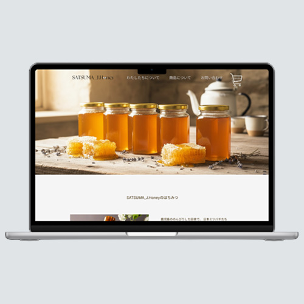
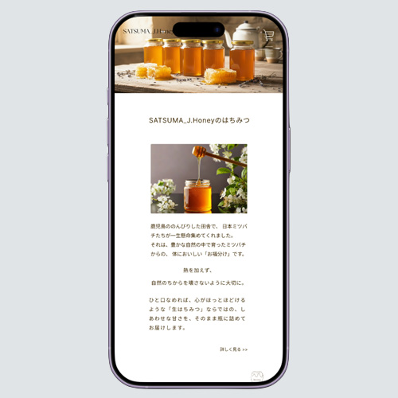

WORK
Webサイト


SATSUMA_J.Honey
webサイト,クライアントワーク
鹿児島県さつま町にて、家族三代で営む日本ミツバチの養蜂ブランドSATSUMA_J.Honey様の公式サイトを作成しました。
日本ミツバチの生態や「生はちみつ」特有の性質を丁寧に解説することで、「商品の価値が正しく伝わり、安心して手に取れる」場所を目指しました。
課題と解決策
- 課題
- 解決策
現在の発信はSNSのみで、実店舗がないため、詳細な商品情報やブランドの背景を伝えきれず、購入への最後の一歩に繋がりにくい状況でした。
公式サイトへ情報を一元化。日本ミツバチの希少性や「非加熱」のメリットをコラムを通じて深く発信することで、単なる「物販」に留まらない「体験と納得」を伴う購入動線を設計し、ブランドへの理解を深めることで、購買意欲の向上を図りました。
目的
立ち上げ初期のフェーズとして、まずは地域の方々への認知とブランドの信頼構築を最優先。実店舗を持たない弱点を補うため、移動販売先での『答え合わせ（商品の深い理解）』の場として機能するブランドサイトを設計しました。
また、今後はネットショッピングの展開も予定しており、将来的なオンライン需要にも柔軟に対応できるプラットフォーム構築を目的としています。
ターゲット
自然食志向、健康志向が高く、暮らしの質を大切にする20～40代の女性。
制作のポイント
- 「生きている証」を伝える工夫
- 体験設計（利用シーンの提案）
- 安心感を与えるトーン
- 色彩設計
発酵による泡や結晶化を「生命力の証」としてポジティブに伝えるため、図解やQ&Aを充実させ、顧客の不安を期待感へと変える工夫を凝らしました。
単なる物品販売に留まらず、ミルクフォームラテなどの具体的な活用法を提案し、購入後のライフスタイルを具体的にイメージさせることで、購買意欲の向上を図りました。
自然本来の優しさを感じさせるベージュと白を基調とし、初めて「生はちみつ」に触れる方でも安心して手に取れる情緒的なデザインを心がけました。
商品の主役である「はちみつ」の色彩を徹底的に分析し、カラーチャートから抽出した理想的な「ハニー色」をアクセントカラーにしました。
使用している写真の彩度に合わせて、実際の商品の透明感やオーガニックな質感を損なわない、肌馴染みの良い柔らかいトーンで統一しています。
また、背景の白やベージュとのコントラストを調整することで、食品としての「清潔感」と、天然素材ならではの「温かみ」を同時に感じさせる設計にしました。
カラーコード
ecc656
3C2600
ffffff
制作の経緯
近年、生態系の変化により減少傾向にある「日本ミツバチ」。その繊細な生命を守り、次世代へ繋ぎたいという祖母の強い想いから、私たちの養蜂活動は始まりました。現在は鹿児島県さつま町の豊かな自然の中で、家族三代にわたりミツバチがのびのびと過ごせる環境づくりに取り組んでいます。
活動の中で採れる「完熟生はちみつ」は、一年に一度しか収穫できない極めて希少で栄養価の高いものですが、実店舗を持たない移動販売中心の活動では、その背景にある「日本ミツバチの生態」や「非加熱の価値」を十分に伝えきれないもどかしさがありました。
そこで、Webデザインを専攻する身として、言葉にできない家族のこだわりやミツバチの生命力を形にしたいと考え、本プロジェクトを立ち上げました。専門的な情報を整理し、初めての方でも安心して手に取っていただけるようなデザインを目指し、試行錯誤を重ね、「信頼の拠点」として、このサイトを作成しました。
制作期間
企画：1週間 / デザイン：2週間 / コーディング：3週間
使用ツール
WordPress / Illustrator / Photoshop / Figma